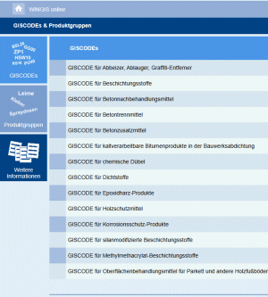

Der GISCODE - der Produkt-Code von GISBAU - ermöglicht es, die Gefährdung durch Reinigungs- und Pflegemittel sehr schnell zuzuordnen. Der GISCODE funktioniert folgendermaßen:
Die Lieferanten ordnen ihre Produkte den Produktgruppen zu und nehmen den Produkt-Code in ihre Informationen (Sicherheitsdatenblätter, technische Merkblätter) und auf dem Gebindeetikett auf. Die Codierung erscheint auch auf den von GISBAU herausgegebenen Produktgruppeninformationen, wodurch jedes Reinigungsmittel eindeutig charakterisiert ist.
Der Arbeitgeber vergleicht lediglich die Codierungen auf den Herstellerinformationen mit denen, die beispielsweise auf den Betriebsanweisungsentwürfen angegeben sind. Ist der Code identisch, treffen die auf der Information aufgeführten Angaben auf das ausgewählte Produkt zu. Für Produkte, die zur Zeit keiner Produktgruppe zugeordnet werden können, liefert GISBAU ggf. Einzelinformationen.
Für Gebäudereiniger-Unternehmen gilt: Es müssen nicht für alle verwendeten Produkte jeweils einzelne Betriebsanweisungen vorhanden sein. Über Produkte, die einer Produktgruppe zugeordnet sind, sollten die Beschäftigten anhand der entsprechenden Produktgruppen-Information und Betriebsanweisung informiert werden.
Informationen zu Reinigungs- und Pflegemittel sind unter WINGIS online erhältlich.
Produkt-Code für Reinigungs- und Pflegemittel